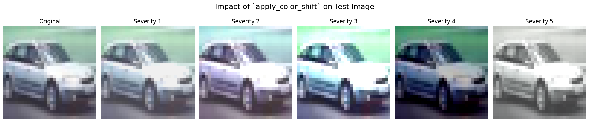

Investigating the Trajectory
of Augmentation Difficulty
Alice Xiao, Aimee Yu, Celinda Zhu
Final Project for 6.7960, MIT • Fall 2025
Alice Xiao, Aimee Yu, Celinda Zhu
Final Project for 6.7960, MIT • Fall 2025
Deep learning's remarkable success in computer vision can be attributed in large part to the capacity of powerful, over-parameterized models such as ResNet [1] to generalize effectively beyond their training data. Consequently, Data Augmentation has emerged as a cornerstone technique to bridge the generalization gap, artificially expanding the training distribution through stochastic transformations like blurring, cropping, and occlusion.
In our previous homework, we explored the critical role of data augmentation in enhancing model performance and shaping representation with implemented transformations such as RandomHorizontalFlip and RandomCrop on the CIFAR-10 dataset. Through this, we observed that while augmentation made fitting the training data more challenging, it could effectively reduce overfitting and improve validation and test accuracy, demonstrating better generalization. Motivated by these findings on how data manipulation fundamentally alters the decision boundaries and distinct properties of learned features, we decided to dig deeper into this topic.
However, standard data augmentation pipelines typically treat the training process as static. Augmentations are applied with random magnitudes drawn from a fixed distribution, regardless of the model's current learning state. This creates a fundamental misalignment between the data and the model:
We hypothesize that the trajectory of difficulty is just as critical as the difficulty itself. Just as a human student would struggle if handed a complex calculus problem on day one, a neural network might struggle to converge if the signal-to-noise ratio is too low at initialization.
Curriculum Learning, as proposed by Bengio et al. [3], formalizes this intuition. It suggests that models learn more effectively when samples are presented in a meaningful order of increasing difficulty ("Easy-to-Hard"). Recent adaptive frameworks like EntAugment [5] and ObjBlur [4] have successfully applied this principle to data augmentation.
Conversely, a counter-intuitive line of research suggests an "Anti-Curriculum" (Hard-to-Easy) approach. Theoretical work by Maltser [6] indicates that exposing models to difficult, strongly augmented samples early on might force the learning of more robust, shape-invariant features. By front-loading the difficulty, the model may be prevented from learning "shortcuts" (like superficial texture bias) during its initial phase of high plasticity.
In this work, we systematically investigate the trajectory of difficulty in data augmentation. We do not merely ask if curriculum learning helps; we ask which trajectory is optimal. We define our core question: Should augmentation difficulty increase or decrease over training, and does the direction of this curriculum significantly affect generalization on CIFAR-10/100?
We explore two distinct axes of difficulty:
and compare three distinct training regimes:
By training ResNet50 architectures on CIFAR-10 and CIFAR-100 under these varying dynamics, we aim to decouple the impact of augmentation type from augmentation scheduling.

To isolate the effect of the curriculum, we needed a rigorously controlled environment. We didn't want model capacity or hyperparameter tuning to affect the result, so we kept the training recipe the same across augmentations.
Given an input image x ∈ ℝ3 × H × W, the backbone produces a feature tensor which we globally pool and flatten into a vector h ∈ ℝd. The final prediction layer is a small MLP classifier. We train the model to minimize cross-entropy loss with label smoothing to mitigate overconfidence.
We investigated two types of augmentation. Each has a difficulty level we can change during training.
region_size S. The box is divided into (B/S)2 sub-squares. Each sub-square is filled with a random color.
exponent is the curriculum variable controlled by the epoch index.
We implemented dynamic schedulers that adjust the augmentation parameters (N, for Colorful Cutout, Size for Dynamic Cutout) as a linear function of the training epoch t.
For Colorful Cutout (`color_cutout_cur_incr`), we increase the exponent linearly, making the noise finer and more complex. For Dynamic Size (`cutout_dynamic_cur_incr`), we linearly increase the mask size:
For Colorful Cutout (`color_cutout_cur_decr`), we start with the highest exponent (max complexity) and decrease to 0. For Dynamic Size (`cutout_dynamic_cur_decr`), we start with the largest mask and shrink it, revealing more of the image as training converges:
This allows us to test the trajectory of learning without changing the total amount of augmentation applied over the course of training.
To better understand if our curriculum strategies help the model generalize, we investigated Color Robustness. We choose color because we include Colorful Cutout as one of our augmentations, and we wanted to see if models trained with a specific difficulty trajectory are more resistant to color changes they haven't seen before.
We simulated this by applying a Color Jitter transformation to the testing images on CIFAR-10 low data. This shifts the brightness, contrast, saturation, and hue without changing the image label. We used a severity scale from 1 to 5 to control how strong the shift is.
This allows us to test if the "hard" or "easy" training schedules create features that are stable even when the image colors look different.
We introduced a low-data regime to investigate whether augmentation curriculum makes a measurable difference when data is scarce. This setup is designed to simulate real-world environments where quality images or other types of data are hard to collect.
To implement this, we subsampled the training split to retain only a fixed fraction f = 0.1. Concretely, after creating the train/validation partition, we randomly sampled a subset of the training data with data_fraction = 0.1, utilizing a fixed random seed to ensure reproducibility across all experimental runs.
cur_incr and cur_decr modes.
(Results pending final training runs)
We compare the test accuracy of ResNet50 on CIFAR-10 across three conditions: Static Baseline, Increasing Difficulty, and Decreasing Difficulty.
Theoretically, we might expect Easy→Hard to help early representation learning and then act as a regularizer, while Hard→Easy might hurt early optimization. However, our experiments suggest that once a good representation is found, the network is robust enough that the precise path through augmentation difficulty doesn’t matter—at least for ResNet-50 on CIFAR.
Possible explanations include:
When augmentations are very strong (dynamic + contrast), some runs clearly underperform. This suggests a tri-way interaction between Augmentation Difficulty, Curriculum Schedule, and Optimizer Hyperparameters (LR schedule, batch size).
We hypothesize that with better tuning (e.g., slightly lower LR when difficulty is high, or longer warmup), a more consistent benefit of Easy→Hard might emerge. Conversely, with more extreme augmentations, curriculum might matter more: Hard→Easy early epochs with heavy corruption could cause irrecoverable damage.
Under conventional ResNet-50 training settings on CIFAR-10/100, the choice of augmentation curriculum direction has at most a very small effect on final test accuracy. The primary observable effect is on the distribution of outcomes (stability), not on best-case performance. Thus, for practitioners in this regime, spending effort on precise curriculum design is likely less important than robust hyperparameter tuning and choosing a reasonable base augmentation strength.
We evaluated several curricula (increasing, decreasing, static augmentation difficulty) across different cutout-style augmentations on CIFAR-10 and CIFAR-100 with ResNet-50.
Contrary to the intuitive expectation, no curriculum direction consistently outperformed the others in terms of best-case test accuracy. The main effect of strong augmentation and curricula in this regime is on training stability, not on the quality of the final solution. This suggests that, at least in this standard vision benchmark setting, augmentation curricula are a relatively second-order design choice compared to base augmentation strength.